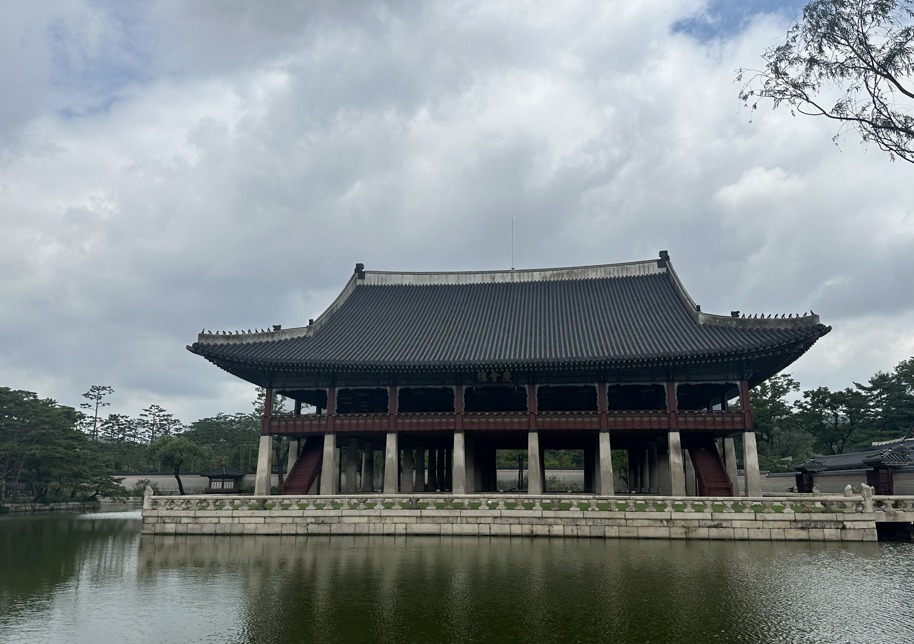
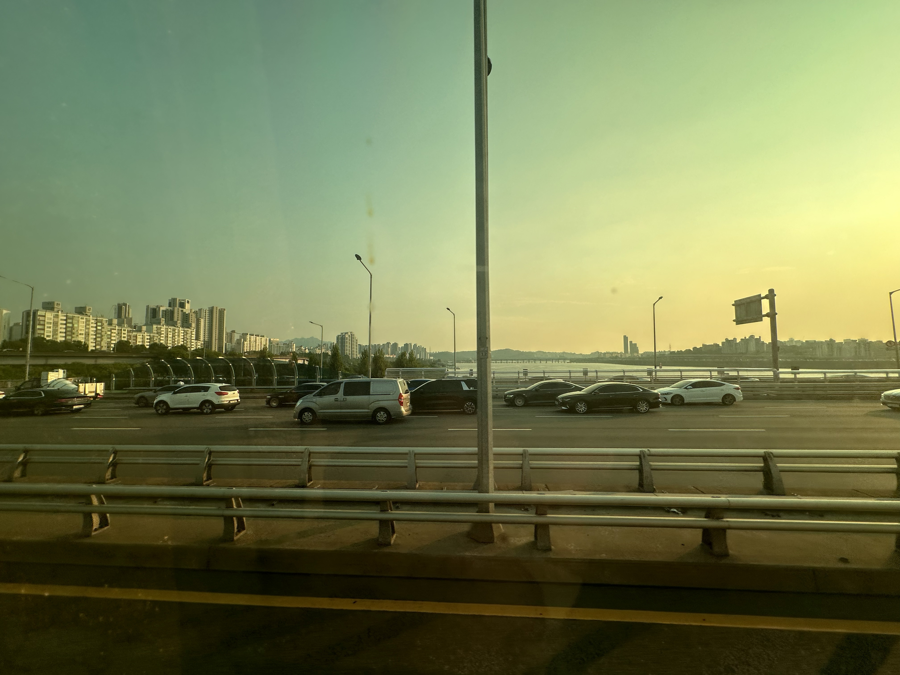

Photography


There are so many words to describe the capital of South Korea. Efficient, highly modern, clean, yummy food, and full of so much culture are just a few words I would describe it as. When I visited Seoul in June 2024 as a college freshman study abroad, I did know what I was getting myself into. I didn't know anyone, didn't know the language and aboslutely didn't know what the coming weeks as an international student would bring upon me. However, Seoul was an amazing city I am proud that I lived in for three months!